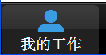
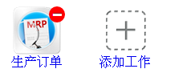
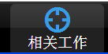
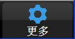

-
添加我的工作
登陆成功后，会停留<我的工作>的导航栏，长按屏幕，出现,点击就可以添加我的工作了，添加完成后，长按屏幕获取按返回键就可以回到正常模式了。同时，如果需要删除一些工作，同样长按屏幕，出现,点击删除按钮就可以删除了。
-
添加相关工作
登陆成功后，切换到<相关工作>的导航栏，长按屏幕，出现,点击就可以添加我的工作了，添加完成后，长按屏幕获取按返回键就可以回到正常模式了。同时，如果需要删除一些工作，同样长按屏幕，出现,点击删除按钮就可以删除了。
-
更换公司口令
进入<更多><设置>选项，点击<清除公司口令>按钮就可以清除公司口令了，然后程序会在1秒后重启，重启后会提示输入新的公司口令。
-
登陆和注销
进入程序后出现在登陆界面，输入用户名和密码后，就可以登陆了，同时可以选中保存密码，也可以选中自动登陆，如果选择了自动登陆，以后进入登陆界面后就自动登陆，如果想取消自动登陆，进入设置取消自动登陆。
进入个人信息可以注销登陆，注销登陆后将会清除保存的用户名和密码。
-
页面切换
在主界面可以左右滑动界面切换页面，进入模块后可以按左上角的返回按钮返回，同时可以按手机返回键返回上一个界面。
-
程序退出
进入我的工作界面后，点击两次返回键就可以退出程序了。
-
软件更新
在进入程序的时候会自动检查更新，如果检查到新的APP版本，会提示是否需要更新，如果选择不更新，就会继续更新模块，如果选择更新，就会先更新APP，再更新模块。
也可以进入<更多>点击<检查更新>来手动更新程序和模块。
如果你不想启动程序的时候自动检查更新程序，你可以进入<更多><设置>里关闭启动时自动检查更新。
-
异常处理
如果程序出现卡死，崩溃等异常，可以退出程序，杀死进程（长按手机home键，拖出MRP客户端进程就可以杀死该进程了）
如果还是会出现问题，进入手机设置，应用程序管理，找到MRP客户端，清除缓存后启动MRP客户端就可以了。